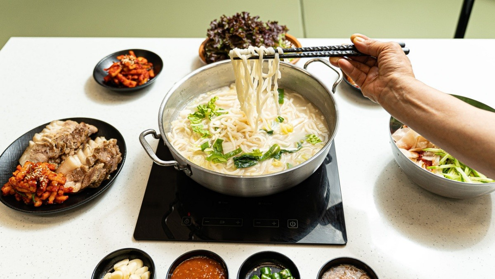

[2TV 생생정보] 국보1호점 - 13,900원 한우 칼국수+보쌈 무한리필! 부천 힐스테이트 중동 가성비 맛집
2026년 2월 11일 방송 | KBS2 2TV 생생정보 | 코너: 가격파괴 Why

요즘 외식비가 부담되시죠? 그런데 13,900원에 한우 사골 칼국수와 국내산 보쌈 무한리필을 즐길 수 있는 곳이 있다면 믿으시겠어요?
오늘은 2TV 생생정보 '가격파괴 Why' 코너에서 소개된 경기 부천시 원미구 중동 힐스테이트 중동의 초특급 가성비 맛집 국보1호점을 소개합니다!
칼국수+보쌈 무한리필 13,900원
💡
한우 사골 칼국수 + 보쌈 무한리필! 진한 사골 육수 베이스의 칼국수와 부드럽고 잡내 없는 국내산 보쌈을 무한으로 즐기세요. 이 가격이 가능한 이유, 방송에서 그 비밀을 공개했습니다!
📍 맛집 기본 정보
🏪 가게명: 국보1호점
🏠 위치: 경기도 부천시 원미구 길주로 234 203동 1층 1094호 (힐스테이트 중동)
📞 전화: 032-651-1566
💰 가격: 칼국수+보쌈 무한리필 13,900원(성인) / 9,000원(초등) / 전골칼국수+맛보쌈 세트 10,000원 / 고기·김치만두 5,000원
🕐 영업시간: 매일 11:00~21:00 (브레이크타임 15:00~17:00, LO 20:40)
🅿️ 주차: 상가 전용 지하 주차장 무료
🚇 교통: 신중동역 또는 부천시청역 하차 후 도보
📺 방송: 2TV 생생정보 2026.02.11 '가격파괴 Why' 코너
👥 추천 대상: 가성비 맛집을 찾는 분, 가족 외식, 직장인 점심
대표 메뉴

이 맛집의 포인트
- 가격 파괴 가성비 — 13,900원에 한우 칼국수 + 보쌈 무한리필
- 진한 사골 육수 — 한우 사골을 오랜 시간 우려낸 깊고 진한 국물
- 국내산 보쌈 무한리필 — 부드럽고 잡내 없는 보쌈을 원하는 만큼
- 힐스테이트 중동 내 위치 — 부천 중동 대형 아파트 단지 상가, 전용 지하 주차장 무료
실제 방문 후기
"만 원대에 칼국수에 보쌈 무한리필이라니! 사골 육수도 진하고, 보쌈도 부드럽고 잡내가 전혀 없어요. 이 가격에 이 퀄리티는 정말 가격파괴입니다."
찾아가는 길
지하철: 서울 지하철 7호선 신중동역 또는 부천시청역 하차 후 도보
버스: 부천 중동 방면 시내버스 이용
주차: 힐스테이트 중동 상가 전용 지하 주차장 무료
📍 경기도 부천시 원미구 길주로 234 203동 1층 1094호 | ☎ 032-651-1566
국보1호점 — 13,900원으로 한우 칼국수에 보쌈 무한리필! 부천 힐스테이트 중동 가성비 끝판왕!
관련 태그
#생생정보
#가격파괴Why
#국보1호점
#부천맛집
#한우칼국수
#보쌈무한리필
#가성비맛집
#중동맛집
#힐스테이트중동
#KBS생생정보
※ 본 포스팅은 KBS 2TV 생생정보 방송 내용을 기반으로 작성되었습니다. 방문 전 영업시간과 메뉴를 확인해주세요.